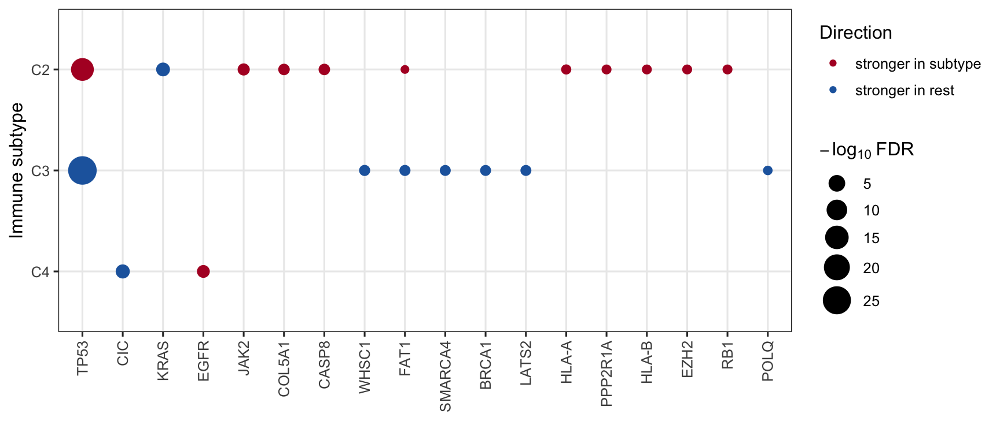

Last updated: 2026-10-29
Checks: 6 1
Knit directory: DiffDriver-PAPER/
This reproducible R Markdown analysis was created with workflowr (version 1.7.1). The Checks tab describes the reproducibility checks that were applied when the results were created. The Past versions tab lists the development history.
The R Markdown file has unstaged changes. To know which version of
the R Markdown file created these results, you’ll want to first commit
it to the Git repo. If you’re still working on the analysis, you can
ignore this warning. When you’re finished, you can run
wflow_publish to commit the R Markdown file and build the
HTML.
Great job! The global environment was empty. Objects defined in the global environment can affect the analysis in your R Markdown file in unknown ways. For reproduciblity it’s best to always run the code in an empty environment.
The command set.seed(20260206) was run prior to running
the code in the R Markdown file. Setting a seed ensures that any results
that rely on randomness, e.g. subsampling or permutations, are
reproducible.
Great job! Recording the operating system, R version, and package versions is critical for reproducibility.
Nice! There were no cached chunks for this analysis, so you can be confident that you successfully produced the results during this run.
Great job! Using relative paths to the files within your workflowr project makes it easier to run your code on other machines.
Great! You are using Git for version control. Tracking code development and connecting the code version to the results is critical for reproducibility.
The results in this page were generated with repository version 0eb32d7. See the Past versions tab to see a history of the changes made to the R Markdown and HTML files.
Note that you need to be careful to ensure that all relevant files for
the analysis have been committed to Git prior to generating the results
(you can use wflow_publish or
wflow_git_commit). workflowr only checks the R Markdown
file, but you know if there are other scripts or data files that it
depends on. Below is the status of the Git repository when the results
were generated:
Ignored files:
Ignored: .DS_Store
Ignored: .claude/
Ignored: analysis/.Rhistory
Ignored: code/.Rhistory
Ignored: data/.DS_Store
Untracked files:
Untracked: data/sgannosig.Rd
Untracked: data/sgmatrixsig.Rd
Untracked: rites SuppFig3_confounding_robustness.{pdf,png} to the working dir#
Unstaged changes:
Modified: analysis/Clinical.Rmd
Modified: analysis/Immune_Subtypes.Rmd
Note that any generated files, e.g. HTML, png, CSS, etc., are not included in this status report because it is ok for generated content to have uncommitted changes.
These are the previous versions of the repository in which changes were
made to the R Markdown (analysis/Immune_Subtypes.Rmd) and
HTML (docs/Immune_Subtypes.html) files. If you’ve
configured a remote Git repository (see ?wflow_git_remote),
click on the hyperlinks in the table below to view the files as they
were in that past version.
| File | Version | Author | Date | Message |
|---|---|---|---|---|
| html | 0eb32d7 | Siming | 2026-10-29 | Rebuild Clinical & Immune_Subtypes site pages (Fig 4a 45/185; Fig 5a 18/220) |
| Rmd | 0ae0a28 | Siming | 2026-10-29 | Move legacy-data guard above the superseded section (skip kableExtra table too) |
| Rmd | 2c2052c | Siming | 2026-10-29 | Make Clinical/Immune_Subtypes Rmds knit from committed data |
| Rmd | 065ee20 | Siming | 2026-10-29 | Add revision real-data analyses for main-text Fig. 4 and Fig. 5 |
| Rmd | c51072e | Siming | 2026-03-22 | Polish documentation, filter to signature model, and add transformed effect size dot plots |
| html | c51072e | Siming | 2026-03-22 | Polish documentation, filter to signature model, and add transformed effect size dot plots |
| html | 0fd83c1 | Qirui Zhang | 2026-02-12 | Build site. |
| html | e24c6e4 | Qirui Zhang | 2026-02-12 | Build site. |
| html | 9a0bb77 | Qirui Zhang | 2026-02-12 | Build site. |
| html | 24651e6 | Qirui Zhang | 2026-02-12 | Build site. |
| Rmd | 92fca54 | Qirui Zhang | 2026-02-12 | rebuild |
To characterize immune-associated differential selection at the pan-cancer level, we pooled tumor samples across cancer types (8,253 tumors across 27 TCGA cancer types) rather than analyzing each tumor type separately. Starting from the 299 driver genes of Bailey et al., each gene was tested for differential selection between each immune subtype and all remaining subtypes (Thorsson C1–C4, one-vs-rest), adjusting for patient age, sex, and tumor type (sex dropped for single-sex cohorts, tumor type for single-tumor cohorts). The Benjamini–Hochberg FDR was computed separately across all genes within each immune subtype.
Pipeline (see code/): run_cohort_multi.R /
recover_cohort.R run the 299 gene-cohorts;
aggregate_pancancer299.R combines the per-cohort C1–C4
results into data/pancancer299_immune_aggregated.txt.
suppressMessages(library(data.table)); library(ggplot2); library(DT)
agg <- fread("data/pancancer299_immune_aggregated.txt")
n_genes <- length(unique(agg$gene))
sig <- agg[dd.fdr < 0.1]
sig_genes <- sort(unique(sig$gene))
cat("Driver genes tested:", n_genes, "\n")Driver genes tested: 220 cat("Genes with FDR < 0.1 in >=1 immune subtype:", length(sig_genes),
sprintf("(%.1f%%)\n", 100 * length(sig_genes) / n_genes))Genes with FDR < 0.1 in >=1 immune subtype: 18 (8.2%)Significant genes: BRCA1, CASP8, CIC, COL5A1, EGFR, EZH2, FAT1, HLA-A, HLA-B, JAK2, KRAS, LATS2, POLQ, PPP2R1A, RB1, SMARCA4, TP53, WHSC1 18 of 220 driver genes (8.2%) show differential selection across immune subtypes.
Each dot is a significant gene × immune-subtype association (BH FDR < 0.1); dot size is the significance and color indicates whether selection is stronger inside that subtype or in the remaining subtypes.
d <- copy(sig)
d[, subtype := factor(phenotype, levels = c("C4", "C3", "C2", "C1"))]
gord <- d[, .(m = min(dd.fdr)), by = gene][order(m), gene]
d[, gene := factor(gene, levels = gord)]
d[, dir := factor(direction, levels = c("up_in_subtype", "up_in_rest"))]
ggplot(d, aes(gene, subtype)) +
geom_point(aes(size = -log10(dd.fdr), color = dir)) +
scale_color_manual(values = c(up_in_subtype = "#B2182B", up_in_rest = "#2166AC"),
labels = c("stronger in subtype", "stronger in rest"),
name = "Direction", na.value = "grey60") +
scale_size_continuous(range = c(2, 8), name = expression(-log[10]~FDR)) +
labs(x = NULL, y = "Immune subtype") +
theme_bw(base_size = 12) +
theme(axis.text.x = element_text(angle = 90, vjust = 0.5, hjust = 1),
panel.grid.minor = element_blank())
datatable(
sig[, .(gene, subtype = phenotype, dd.p = signif(dd.p, 3),
dd.fdr = signif(dd.fdr, 3), direction, mut_freq)][order(subtype, dd.fdr)],
options = list(pageLength = 20)
)
R version 4.3.2 (2023-10-31)
Platform: aarch64-apple-darwin20 (64-bit)
Running under: macOS Sonoma 14.6.1
Matrix products: default
BLAS: /System/Library/Frameworks/Accelerate.framework/Versions/A/Frameworks/vecLib.framework/Versions/A/libBLAS.dylib
LAPACK: /Library/Frameworks/R.framework/Versions/4.3-arm64/Resources/lib/libRlapack.dylib; LAPACK version 3.11.0
locale:
[1] en_US.UTF-8/en_US.UTF-8/en_US.UTF-8/C/en_US.UTF-8/en_US.UTF-8
time zone: America/New_York
tzcode source: internal
attached base packages:
[1] stats graphics grDevices utils datasets methods base
other attached packages:
[1] DT_0.33 ggplot2_3.5.2 data.table_1.17.8 workflowr_1.7.1
loaded via a namespace (and not attached):
[1] sass_0.4.10 generics_0.1.4 stringi_1.8.7 digest_0.6.39
[5] magrittr_2.0.3 evaluate_1.0.5 grid_4.3.2 RColorBrewer_1.1-3
[9] fastmap_1.2.0 rprojroot_2.0.4 jsonlite_2.0.0 processx_3.8.5
[13] whisker_0.4.1 ps_1.8.1 promises_1.5.0 httr_1.4.8
[17] crosstalk_1.2.2 scales_1.4.0 jquerylib_0.1.4 cli_3.6.5
[21] rlang_1.1.6 withr_3.0.2 cachem_1.1.0 yaml_2.3.12
[25] otel_0.2.0 tools_4.3.2 dplyr_1.1.4 httpuv_1.6.15
[29] vctrs_0.6.5 R6_2.6.1 lifecycle_1.0.5 git2r_0.36.2
[33] stringr_1.6.0 fs_1.6.6 htmlwidgets_1.6.4 pkgconfig_2.0.3
[37] callr_3.7.6 pillar_1.11.1 bslib_0.10.0 later_1.4.8
[41] gtable_0.3.6 glue_1.8.0 Rcpp_1.1.0 xfun_0.52
[45] tibble_3.3.1 tidyselect_1.2.1 rstudioapi_0.17.1 knitr_1.51
[49] farver_2.1.2 htmltools_0.5.9 rmarkdown_2.29 labeling_0.4.3
[53] compiler_4.3.2 getPass_0.2-4